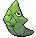

-
bulbasaur #001

- grama
- veneno
Há uma semente de planta em suas costas desde o dia que este Pókemon nasce. A semente cresce lentamente.
-
ivysaur #002

- grama
- veneno
Quando o bulbo em suas costas cresce, parece perder a capacidade de ficar em pé nas suas patas traseiras.
-
venusaur #003

- grama
- veneno
Sua planta floresce quando está absorvendo energia solar. Ele permanece em movimento para buscar a luz solar.
-
charmander #004

- fogo
Charmander tem uma capacidade, que permite que seus ataques do tipo Fogo para causar 150% de dano se a sua saúde cai abaixo de 30%. Como uma habilidade natural, Charmander pode produzir chamas dentro de si e projetá-las de sua boca, o que significa que ele pode respirar fogo. A potência dos seus ataques de chama pode ser medido pelo tamanho da chama na sua cauda.
-
charmelon #005

- fogo
Charmeleon como suas outras formas evolutivas, pode respirar fogo. Seus poderes, porém, são muito maiores do que Charmander do Charizard.
-
charizard #006

- fogo
Charizard é capaz de cuspir fogo, como as suas formas pré-evoluídas. No entanto, ao contrário de suas formas pré-evoluídos, Charizard agora tem a capacidade de usar mosca com o desenvolvimento de grandes asas sobre as suas costas. Charizard também pode aprender o tipo de Santo movimento Shadow Claw.
-
squirtle #007

- água
O casco de Squirtle não é apenas usado para a proteção. A forma arredondada do casco e as ranhuras em sua superfície ajudam a minimizar a resistência na água, permitindo que este Pokémon nade em altas velocidades.
-
wartortle #008

- água
Sua cauda é grande e coberta com uma pele rica, espessura. A cauda torna-se cada vez mais profunda em cor com a idade de Wartortle. Os arranhões na seu casco são provas de resistência deste Pokémon como um combatente.
-
blastoise #009

- água
Blastoise tem canhões de água que se projetam de seu casco. Os canhões de água são muito precisos. Eles podem disparar balas de água com uma precisão suficiente para atacar latas vazias de uma distância de mais de 160 pés.
-
caterpie #010

- inseto
Caterpie tem um apetite voraz. Ele pode devorar as folhas maiores do que o seu corpo bem diante dos seus olhos. A partir de sua antena, este Pokémon libera um odor terrivelmente forte.
-
metapod #011
- inseto
O escudo que cobre o corpo deste Pokémon é tão duro como uma laje de ferro. Metapod não se move muito. Ele ainda permanece assim porque está preparando suas entranhas macias para a evolução dentro da casca dura.
-
butterfree #012

- inseto
Butterfree tem uma capacidade superior para procurar um delicioso mel de flores. Ele pode até mesmo buscar, extrair, transportar e mel de flores que estão florescendo mais de seis milhas do seu ninho.
-
pikachu #013

- animal
- elétrico
Toda vez que Pikachu dá de cara com algo novo, ele o acerta com uma descarga elétrica. Se você se deparar com um fruto torrado, é uma evidência de que esse Pokémon errou na intensidade de energia de sua descarga elétrica.